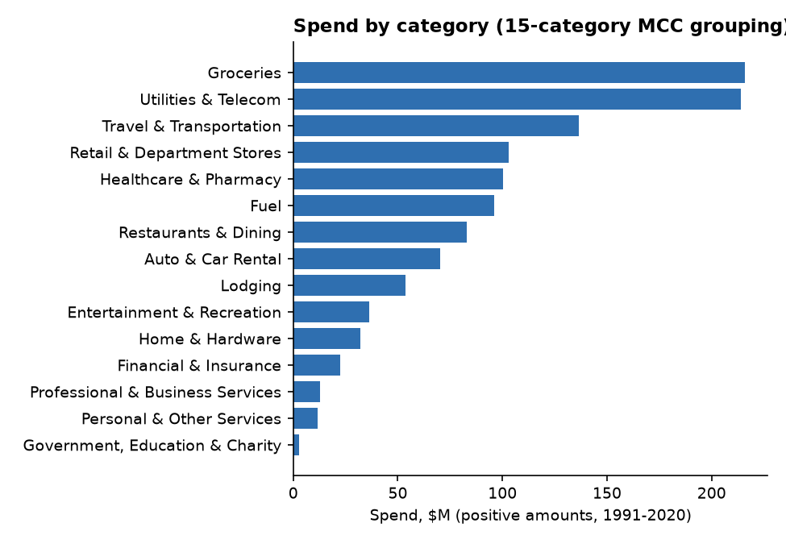
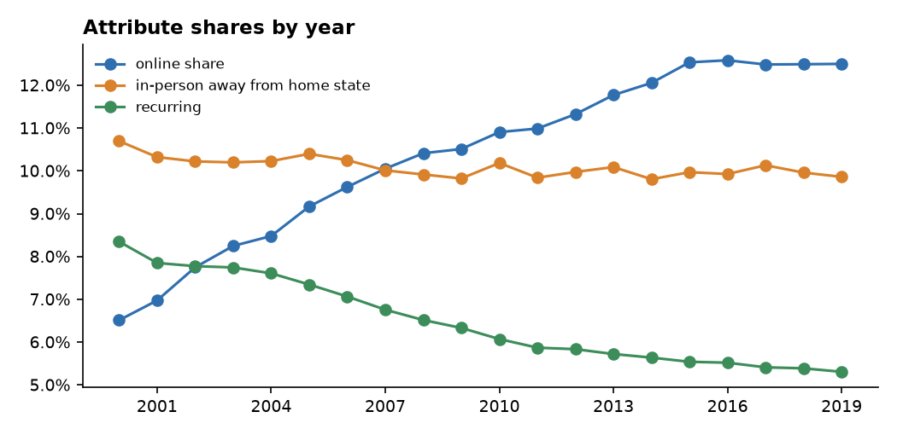
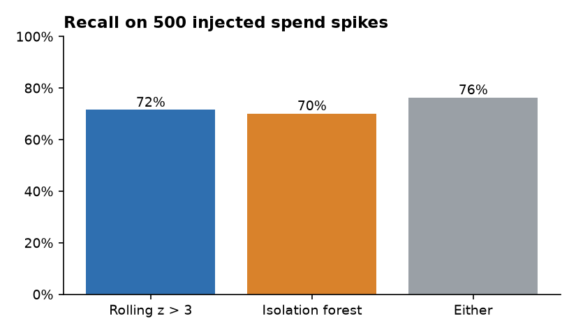

Card transaction categorization and attribute validation
24.4 million synthetic card transactions (IBM TabFormer) loaded into DuckDB, each merchant category code mapped to one of 15 spending categories with a written rule table, and value-added attributes derived in SQL: online vs in person, out-of-state spend, spend bands and recurring payments. Every attribute is audited against a stratified sample recomputed by separate code before release, anomalous spend is flagged two ways and scored on injected spikes, and post-refresh checks watch for drift.
Categories and attributes


Attribute audit
Each attribute's sample is recomputed from the raw CSV fields by Python code that does not share the SQL. The first audit failed: 4 of 20 recurring pairs disagreed, because the SQL grouped consecutive months before dropping months that broke the amount rule. After the fix the recurring pairs fell from 28,497 to 12,421 and every sampled row passed.
| Attribute | Sampled | Passed | Released |
|---|
Anomalous spend

| Detector | Flags | Injected found | Recall |
|---|
About 3% of user-category-months are flagged even before injection, so a flag is a prompt to look rather than a finding.
Data profile
| Check | Result |
|---|
Limitations
- TabFormer is generated by rules, so categories, travel and anomalies follow the generator's patterns, not real cardholder behavior.
- The audit recompute is automated; the sample file (
docs/audit_sample.csv) is ready for a manual review that has not been done yet. - The 15-category grouping is this project's own; issuers group MCCs differently.
- No Power BI file is included;
docs/user_guide.mdexplains how to build the report from the DuckDB tables.